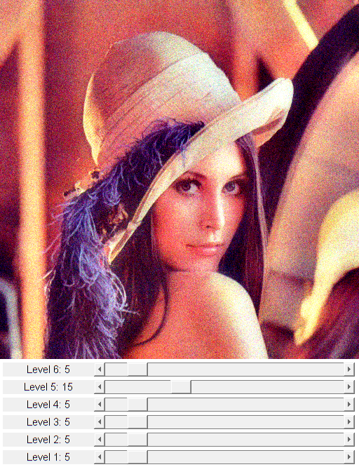

Laplacian Pyramid Construction and Merging
References:
- Peter J. Burt and Edward H. Adelson, "The Laplacian Pyramid as a Compact Image Code", IEEE Trans. on Communications, vol. 31, no. 4, pages 532-540, 1983. http://citeseerx.ist.psu.edu/viewdoc/summary?doi=10.1.1.54.299
Sources:
function varargout = lap_pyr_demo_gui(varargin) % create the UI nlevel = 6; % number of pyramid levels h = buildGUI(nlevel, varargin{:}); if nargout > 0, varargout{1} = h; end % main loop while ishghandle(h.fig) % get new frame frame = h.cap.read(); if isempty(frame), break; end % levels control values vals = get(h.slid, 'Value'); % Laplacian pyramid filtering pyr = build_lap_pyr(frame, nlevel); pyr = cellfun(@(p,v) p*round(v/5), pyr, vals, 'UniformOutput',false); res = merge_lap_pyr(pyr); % display set(h.img, 'CData',res); drawnow; end end function levels = build_lap_pyr(img, nlevel, dtype) %BUILD_LAP_PYR Build Laplacian pyramid % % levels = build_lap_pyr(img, nlevel) % levels = build_lap_pyr(img, nlevel, dtype) % % ## Input % * __img__ input image % * __nlevel__ number of pyramid levels % * __dtype__ precision for image arithmetics, default 'int16' % % ## Output % * __levels__ Laplacian pyramid, cell array of length `nlevel` % % See also: cv.buildPyramid, cv.Blender.createLaplacePyr % if nargin < 3, dtype = 'int16'; end img = cast(img, dtype); levels = cell(nlevel,1); for i=1:nlevel-1 next_img = cv.pyrDown(img); img1 = cv.pyrUp(next_img, 'DstSize',[size(img,2) size(img,1)]); levels{i} = img - img1; img = next_img; end levels{nlevel} = img; end function img = merge_lap_pyr(levels) %MERGE_LAP_PYR Reconstruct image from Laplacian pyramid % % img = merge_lap_pyr(levels) % % ## Input % * __levels__ Laplacian pyramid, cell array % % ## Output % * __img__ output image % % See also: cv.Blender.restoreImageFromLaplacePyr % img = levels{end}; for i=numel(levels)-1:-1:1 lev_img = levels{i}; img = cv.pyrUp(img, 'DstSize',[size(lev_img,2) size(lev_img,1)]); img = img + lev_img; end img = uint8(min(max(img, 0), 255)); end function onChange(~,~,h) %ONCHANGE Event handler for UI controls % update UI for i=1:numel(h.slid) v = round(get(h.slid(i), 'Value')); set(h.txt(i), 'String',sprintf('Level %d: %d', i, v)); end drawnow; end function h = buildGUI(nlevel, varargin) %BUILDGUI Creates the UI % setup video capture if nargin > 1 cap = cv.VideoCapture(varargin{:}); else cap = createVideoCapture([], 'lena'); end assert(cap.isOpened(), 'Could not initialize capturing'); % video settings frame = cap.read(); assert(~isempty(frame), 'Could not read frame'); sz = size(frame); % build the user interface (no resizing to keep it simple) h = struct(); h.cap = cap; h.fig = figure('Name','Laplacian Pyramid Filter', ... 'NumberTitle','off', 'Menubar','none', 'Resize','off', ... 'Position',[200 200 sz(2) sz(1)+5+nlevel*25-1]); if ~mexopencv.isOctave() %HACK: not implemented in Octave movegui(h.fig, 'center'); end h.ax = axes('Parent',h.fig, 'Units','pixels', ... 'Position',[1 5+nlevel*25 sz(2) sz(1)]); if ~mexopencv.isOctave() h.img = imshow(frame, 'Parent',h.ax); else %HACK: https://savannah.gnu.org/bugs/index.php?45473 axes(h.ax); h.img = imshow(frame); end for i=1:nlevel h.txt(i) = uicontrol('Parent',h.fig, 'Style','text', ... 'Position',[5 5+(i-1)*25 130 20], 'FontSize',11, ... 'String',sprintf('Level %d: 5',i)); h.slid(i) = uicontrol('Parent',h.fig, 'Style','slider', ... 'Position',[135 5+(i-1)*25 sz(2)-135-5 20], 'Value',5, ... 'Min',0, 'Max',50, 'SliderStep',[1 5]./(50-0)); end % hook event handlers set(h.slid, 'Callback',{@onChange,h}, ... 'Interruptible','off', 'BusyAction','cancel'); end